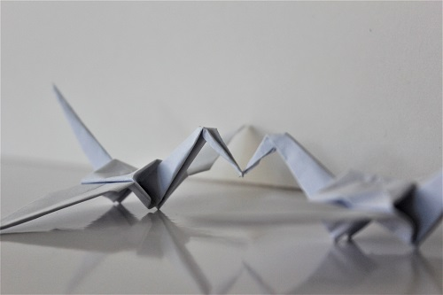
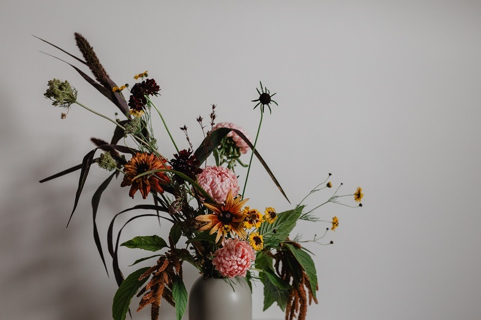
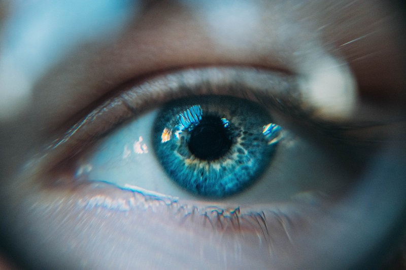

100 Painting Ideas for when You are Completely Blank
June 4, 2020 │ By : Inaas Asad
Can't think of a single idea to convert into a painting? Fear not, for you've come to the right place.
We've all been there. You're sitting in front of your workplace with your paints and brushes scattered and with your eyeballs glued to your empty canvas. You're listening to some amazing music through your brand new headphones, except your brain is a blank canvas itself. It's pretty frustrating when not a single idea seems to be making its way to your head. If that's the case,
it's your lucky day. You just discovered a diverse list of 100 ideas that you can feed into that brain of yours.
1) A scene from your favorite movie (e.g. "Alice in Wonderland" or "Titanic")
2) A sunrise
3) A portrait of your favorite celebrity
4) Your favorite animal
5) The galaxy (Try out fluid art to paint a galaxy. It's probably the easiest way to do it.)
6) A landmark from your favorite country (perhaps the Eiffel tower or the Colosseum)
7) A sunset
8) A rain scene
9) A fruit bowl (Try arranging real fruits on a table and transferring what you see onto the canvas.)
10) Fluffy clouds (Step up your game and add a person carrying out an activity in the clouds.)
11) What freedom looks like (Use symbolism.)
12) A forest scene
13) Something that is typical of your country
14) Time (You can paint a fancy clock slowly being shattered to pieces. Be creative.)
15) Roses over a fence
16) Someone cycling without using their hands
17) A snow scene
18) An abstract version of happiness
19) An abstract version of anger
20) A ship sailing the sea
21) A desert scene
22) One of the seven wonders of the world (e.g. the Hanging Gardens of Babylon)
23) A beach
24) Under the sea
25) A butterfly on a leaf
26) Self-portrait
27) The aurora borealis
28) A room from your house
29) A tranquil lake scene
30) A fort
31) Your favorite sweet
32) A Ferris wheel
33) Hair
34) A field of sunflowers
35) Your favorite food
36) A different planet
37) A concert scene
38) An eagle's view of a city (Try out three-point perspective drawing. It's a great way to draw a city from above.)
39) Ant's view of a city
40) Mountain scenery
41) A castle
42) An airplane
43) An origami figure
44) Releasing lanterns
45) Hot air balloons
46) Flock of birds
47) Crystals
48) Your furry friend
49) An office scene
50) A city at night
51) A farmhouse
52) A storm

53) A cherry tree
54) An astronaut
55) A person playing a piano
56) A person skiing
57) A tornado
58) Stuffed toys
59) Flower Vase
60) An ocean wave
61) A geometric pattern
62) City skyline
63) Candle stand
64) A fantasy character
65) An eye (paint the reflection of a room in the pupil)
66) World map
67) A painting inside a painting
68) A pair of sunglasses (paint the reflection of a room on the glass)
69) An illuminating lamp
70) The moon
71) An autumn scene
72) Genie's lamp
73) An old artefact
74) A remake of a famous painting in your own style
75) Indoor plants
76) A fancy feather
77) An airplane window and the view seen through it.


78) A streetlamp illuminating a dark street
79) Mandala inspired design
80) Tiny people on a regular sized object
81) A person with flowers instead of hair
82) An inspiring quote on a colorful background
83) A place (e.g. a garden) seen through a keyhole
84) A cafe
85) A shooting star in a night sky
86) Heart and brain playing tug-of-war
87) A scene from your favorite book (Use your imagination and turn the words into a painting)
88) A pond filled with lotus
89) Calligraphy (Challenge yourself and write a quote in a foreign alphabet.)
90) Seashells
91) A memorable scene from your life
92) Something related to technology
93) Visual representation of music (Try painting color coming out of a pair of headphones)
94) A bridge
95) Blossom trees
96) Your favorite car
97) Steaming hot chocolate (or any drink) in your favorite mug